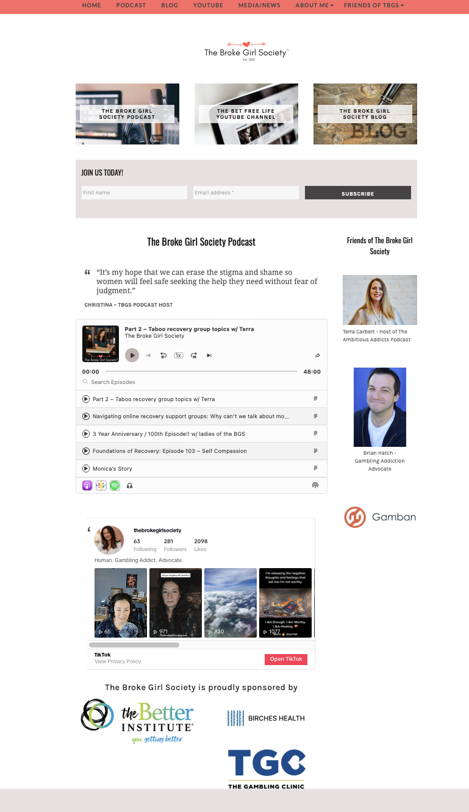

The Broke Girl Society
The Broke Girl Society (TBGS) was created for women struggling with problem gambling to have a space where they feel safe to talk about their journey without fear of judgment. Christina, founder of the TBGS, wanted a site that would promote her podcasts and also allow for display of media opportunities. Most importantly, the site needed to be easy to manage. TBGS was built on WordPress with the ability to add ecommerce features if needed.
